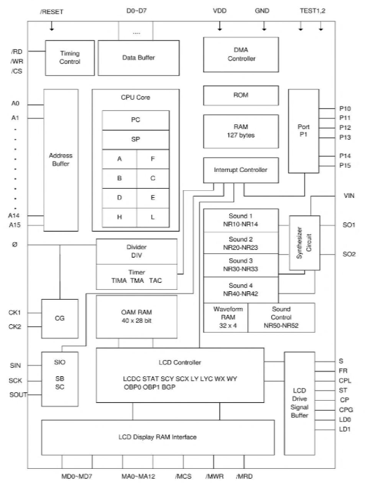
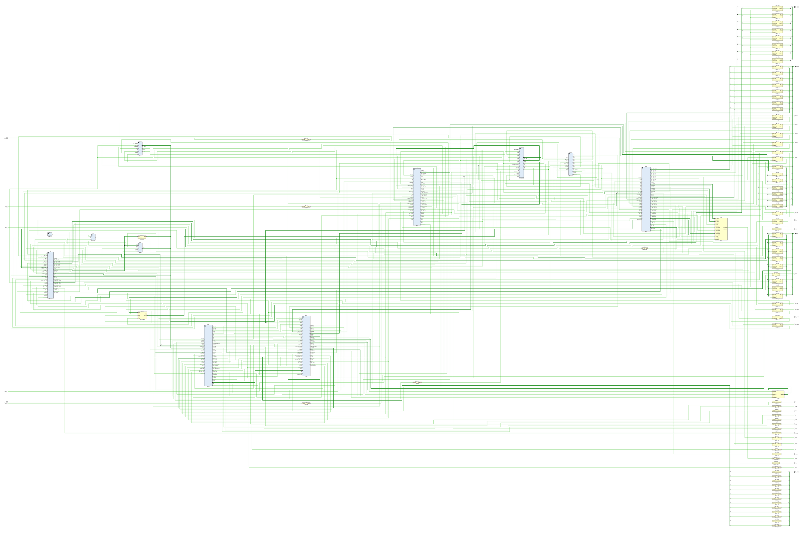

DMG-CPU LR35902 SoC
Block Diagram

1Top-level layout of the entire SoC:

Architecture Overview
After a long analysis, the impressions about the architectural solutions used in DMG-CPU can be expressed as follows:
- The topology has already been influenced by the Mead-Conway revolution - most of the elements are implemented as standard cells, but you can see that the developers have not forgotten the "manual method". Almost the whole SM83 core and macro-cells (embedded memory) and (naturally) DAC are made by "hand"
- Standard cells are arranged in domains, but they do not have a clear specialization (e.g. the APU contains logic for the serial port). In modern solutions, all standard cells are usually located in the giant "sea of cells". In this case we most likely have several small "pools". It is interesting that the very first revision of DMG-CPU has a slightly different domain organization
- The SoC has a rather "bushy" clock tree (it has not been fully explored yet). The SM83 core receives a pack of CLKs as input. Besides, CLK wiring uses both single-rail CLK and dual-rail CLK (CLK + its complement), so latch/dff have 2 variants
- As mentioned, both latch and dff are used for sequential logic. That is, the SoC uses asynchronous and synchronous approaches together. This makes the circuits rather "capricious" with respect to CLK frequency
- The internal buses are driven via tristate elements (notif/bufif) using old-school bus precharging technique for a specific CLK half-cycle. Modern solutions use special cells (Bus-keepers)
- The SM83 core is made with one layer of metal, the rest of the SoC uses two layers of metal. The SM83 core uses old-school domino logic on par with conventional CMOS logic
- Macro cells (memory) contain a small number of standard cells :-)
- These and other features make the DMG-CPU a rather curious "exhibit", but nonetheless interesting to study and dive into the history of a "previous, obviously more advanced civilization"
Design Overview
The design will be considered from the point of view of module topology ("pools" of standard cells that can be found on the chip). The description is rather superficial, but it is good for "first sight".
- ClkGen: the task of this module is to distribute a bushy CLK tree to everyone. Discretization within the DMG-CPU is provided by T-cycles. 4 T-cycles make up 1 M-cycle. Those familiar with Z80 will quickly draw a parallel here. As @msinger aptly pointed out - events inside DMG-CPU can occur both "in-space" (when it comes to DFF and edges) and "in-time" (when it comes to latches and levels). Yes, unlike modern solutions based entirely on DFF (synchronous logic), old-school latches have to be taken into account here as well
- SM83Core: a typical 8-bit processor core, in many respects "imitates" Z80 (IDU, M/T-cycles, instruction set), but in general it is an original child of SHARP engineers
- Ser: contains the main part of Serial Link logic. The rest of the pieces are in the APU, since they are closer to the pads there
- Arb: typical arbiter for connecting internal and external buses in various combinations
- MMIO: contains most of the MMIO devices such as Divider, Timer, DMA Unit and interrupt controller (IF)
- PPU1: A part of PPU closer to LCD interface, BG and WIN part of the pipeline. Also contains H/V counters which are the driving force for all PPU state machines.
- PPU2: A part of PPU closer to Objects and OAM ("sprites"). Both parts communicate closely with each other with a bunch of signals
- APU: Typical sound generator of the "Chiptunes" era. Also contains pieces of logic for Serial Link, JoyPad and address bus arbitration, for the reason that these circuits are closer to the pads
Buses
This section contains a list of all internal buses. Tables of the other signals can be found in the corresponding sections.
| Name | From | Where To | Description |
|---|---|---|---|
a 2 |
Core / Arb+MMIO+APU | HRAM, BootROM, Arb, MMIO, PPU1, PPU2, APU | Internal address bus. In TEST1 mode, all internal address bus drivers are disabled and the value comes from the outside, together with the Arb+MMIO+APU modules (for reason 2) instead of the SM83 core. |
d |
Global | Global | Internal data bus. In TEST1 mode all internal drivers are not allowed to drive the data bus. During clk2=0 (and if TEST1 Mode is disabled) the data bus is precharged from 4 places at once (3 prechargers in different modules and 1 precharger in SM83 Core) |
n_ma |
PPU1 | Pads | External video memory address bus (inverse hold) |
nma |
PPU1, PPU2 | PPU1, PPU2 | Internal video memory address bus between PPUs (inverse hold) |
md |
PPU1, PPU2, Arbiter | PPU1, PPU2, Arbiter | Internal video memory data bus |
oam_din |
Arb | PPU2 | OAM data input bus |
wave_a |
APU | WaveRAM | Wave RAM address bus |
wave_rd |
WaveRAM | APU | Wave RAM data output bus |
oa |
PPU2 | OAM | OAM address bus |
n_oama |
PPU2 | OAM | OAM A data bus (inverse hold) |
n_oamb |
PPU2 | OAM | OAM B data bus (inverse hold) |
dma_a |
MMIO | Arb, APU, PPU2 | DMA address bus. Due to the fact that the address bus arbitration is separated between Arb, MMIO and APU - part of the bus bits go to Arb (15) and APU (7:0). This bus is used directly for DMA needs only in PPU2 |
What does the letter M in the name of the PPU and VRAM buses stand for? I don't know... maybe Mario or Metroid? :smiley:
Revisions
TBD.